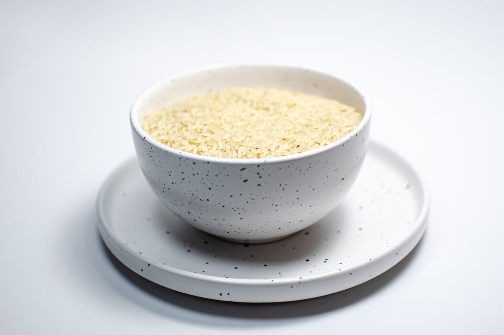
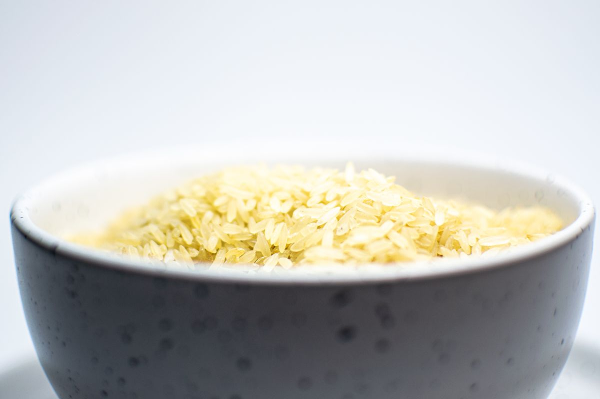
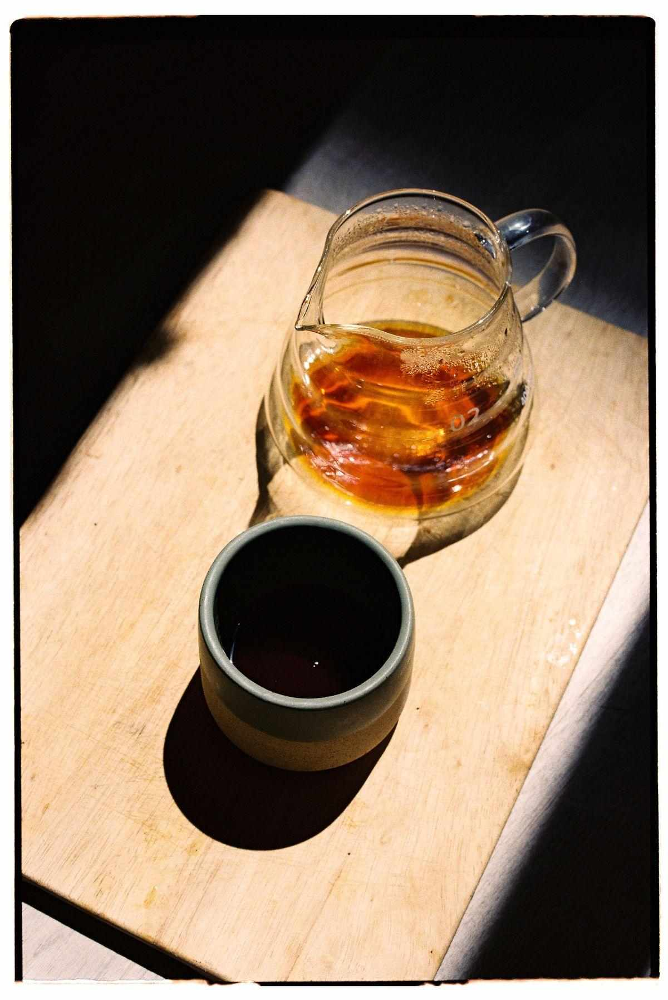

やわらかなお肉の旨味
やわらかさと旨味が好評の肉料理。麹とお肉の組み合わせを楽しむひと皿。
長野・南千歳 ｜ 肉と麹の料理のお店
麹のやさしい甘みと、お肉の満足感。
長野駅のほど近く、ビルの2階で楽しむ
ワンプレートランチ。
夜はコース（要予約）17:00〜21:00【要確認】
ご予約がおすすめです。
【要確認：電話／ネット予約の可否】

ご来店の前に
ランチはご予約で満席になる日が多いお店です。ご来店前のご予約をおすすめします。【要確認：文言】

肉と麹 ito について
肉料理と麹の組み合わせを、気軽なランチで。
やわらかいお肉、麹の風味を感じるやさしい甘みが、口コミでも親しまれています。
からだにやさしく、しっかり満足できるランチプレート。おひとりでも、ご友人とでも、落ち着いた和モダンの雰囲気で。
Googleマップの口コミの傾向をもとに構成しています。
【要確認：お店の想い・シェフ紹介】
やわらかさと旨味が好評の肉料理。麹とお肉の組み合わせを楽しむひと皿。
自家製の麹調味料で仕立てる味。
【要確認：種類・表記】
サラダや惣菜、スープまで。いろいろな味わいを楽しめるプレート。【要確認：セット内容】
お昼のひと皿
ランチ 11:30〜16:00 ／ 木曜定休
メニューは掲載イメージです。
料理名・内容・価格は確認後にご案内します。
サラダ・惣菜・ご飯・スープ・ドリンク付き 【要確認】
内容は日によって変わります【要確認】
ご注文はスマホのモバイルオーダーで【要確認】
混み合う時間帯はお料理のご提供にお時間をいただくことがあります【要確認：文言の可否】

営業時間とアクセス
長野駅から徒歩5分ほど。
ぽっぽ広場近く、第一荒井ビルの2階。
【要確認：駐車場・近隣コインパーキング】
2名テーブル中心・カウンター席あり
【要確認：席数・構成】
ご予約・お問い合わせ
ご予約・お問い合わせはお電話で。
026-217-7438【要確認：受付時間・電話／ネット予約の可否】
当日の空き状況・臨時休業はInstagramでお知らせしています【要確認】